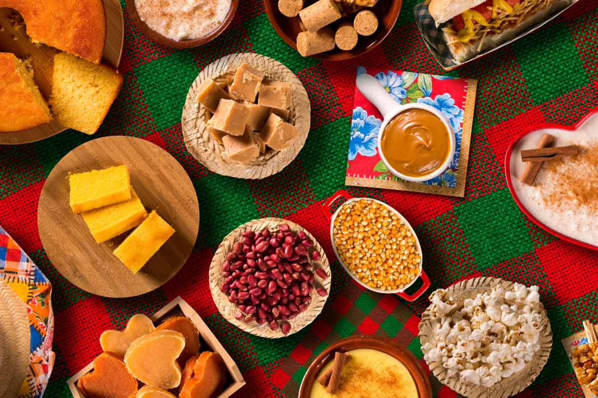

Comidas da Festa Junina na Etec
[17:00] NICOLAS DE CAMPOS ANNIBAL Na festa junina da Etec, as brincadeiras tradicionais são tão divertidas quanto as comidas típicas! Há a pescaria, onde crianças tentam "pescar" prêmios; o correio elegante, onde mensagens são trocadas de forma anônima; a corrida do saco, que desafia a habilidade de correr pulando dentro de sacos; e a quadrilha, uma dança típica que anima a festa com passos ensaiados e muita animação!
Então não perca tempo e venha comemorar "com nois cumpade"
